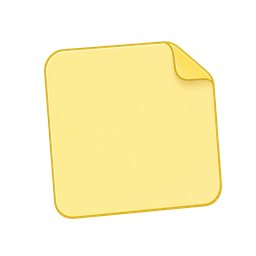
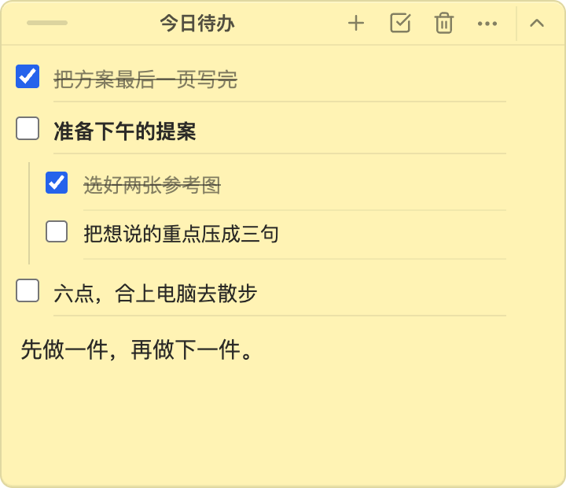
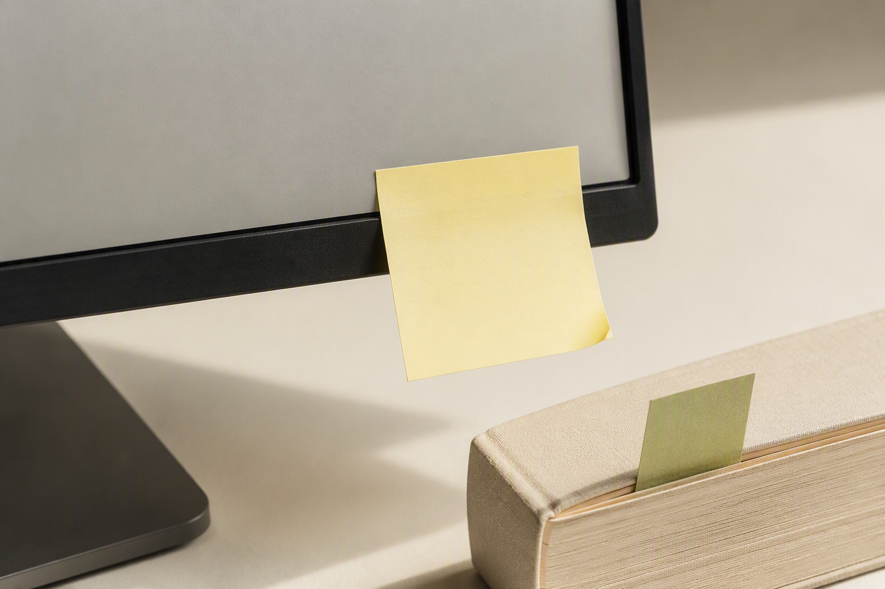

<!doctype html>
<html lang="zh-CN">
<meta charset="utf-8">
<meta name="viewport" content="width=device-width,initial-scale=1">
<title>悬浮便签 · 看见的力量</title>
<style>
:root{--paper:#f8f6ef;--ink:#252c27;--green:#52634a;--muted:#72776b;--yellow:#fff3b0}
*{box-sizing:border-box}html,body{margin:0;background:var(--paper);color:var(--ink);font-family:'PingFang SC','Hiragino Sans GB',-apple-system,sans-serif}
.frame{position:relative;width:1600px;height:1000px;overflow:hidden;background:var(--paper)}
.brand{position:absolute;left:82px;top:60px;display:flex;align-items:center;gap:16px;font-weight:600;font-size:28px;z-index:10}
.brand img{width:54px;height:54px;filter:drop-shadow(0 6px 8px #302b151c)}
.edition{position:absolute;right:82px;top:79px;font-size:18px;letter-spacing:3px;color:var(--muted)}
h1{position:absolute;left:82px;top:221px;margin:0;font-size:111px;line-height:1.13;font-weight:700;letter-spacing:-4px;z-index:8}
h1 em{font-style:normal;color:var(--green)}
.description{position:absolute;left:87px;top:530px;margin:0;font-size:30px;line-height:1.8;z-index:8}
.description .minor{color:var(--muted)}
.soul{position:absolute;left:87px;top:691px;margin:0;font-size:34px;font-weight:650;z-index:8}
.soul mark{background:linear-gradient(transparent 47%,#eee5a7 47%,#eee5a7 90%,transparent 90%);color:inherit;padding:0 4px}
.footer{position:absolute;left:82px;right:82px;bottom:43px;display:flex;justify-content:space-between;font-size:21px;color:var(--muted);z-index:10}
.footer strong{font-weight:500;color:var(--green)}
.stage{position:absolute;left:735px;top:164px;width:793px;height:674px;border-radius:24px;background:linear-gradient(143deg,#edeee5,#dce2d3 55%,#c3ceb9);box-shadow:0 25px 65px #25351e13;border:1px solid #fff;overflow:hidden;border-right:7px solid #303c30}
.stage:before{content:'';position:absolute;left:-130px;top:400px;width:1040px;height:580px;border-radius:50%;background:linear-gradient(160deg,#c0ceb377,#e9eee399);transform:rotate(-21deg)}
.window{position:absolute;background:#f9faf6;border:1px solid #b4beb044;border-radius:12px;box-shadow:0 15px 36px #28372413;overflow:hidden}
.window .bar{height:43px;padding:12px 18px;border-bottom:1px solid #869a7920;font-size:15px;letter-spacing:1px;color:#808a78;background:#f3f5ee}
.window .body{padding:27px 26px}.line{height:9px;background:#bdc7b64d;margin:15px 0;width:80%}.line.short{width:52%}.window .block{width:60%;height:85px;background:#e9eee2;margin-top:26px;border-radius:5px}
.window.doc{left:39px;top:72px;width:572px;height:354px;transform:rotate(-3deg)}
.window.web{left:102px;top:221px;width:584px;height:354px;transform:rotate(3deg)}
.ui-note{position:absolute;left:245px;top:139px;width:475px;height:409px;z-index:5;filter:drop-shadow(0 24px 28px #3e422428)}
.ui-tab{position:absolute;left:auto;right:-94px;top:558px;width:188px;height:63px;z-index:4}
.callout{position:absolute;left:241px;top:88px;font-size:24px;letter-spacing:1px;font-weight:550;color:#4d6142;z-index:8;display:flex;align-items:center;gap:10px}.callout:before{content:'';height:7px;width:7px;border-radius:50%;background:#6f885b}
.stage-caption{position:absolute;left:752px;top:872px;font-size:25px;color:var(--green)}
.social{width:1080px;height:1440px}.social .brand{left:65px;top:60px;font-size:28px}.social .edition{right:65px;top:81px;font-size:20px}
.social h1{left:66px;top:189px;font-size:116px;line-height:1.1}
.social .description{left:72px;top:478px;font-size:33px;line-height:1.55}
.social .stage{left:66px;top:616px;width:950px;height:630px}
.social .window.doc{left:33px;top:82px;width:636px;height:348px}
.social .window.web{left:107px;top:224px;width:641px;height:340px}
.social .ui-note{left:318px;top:81px;width:565px;height:487px}
.social .callout{left:330px;top:31px;font-size:27px}
.social .ui-tab{right:-100px;top:538px;width:200px;height:67px}
.social .soul{left:71px;top:1284px;font-size:37px}
.social .footer{left:66px;right:66px;bottom:33px;font-size:21px}
.philosophy h1{top:183px;font-size:91px;line-height:1.18;letter-spacing:-3px}
.philosophy .description{top:439px;font-size:34px}
.photo{position:absolute;left:64px;top:548px;width:952px;height:634px;object-fit:cover;border-radius:16px;box-shadow:0 20px 46px #322e1d14}
.philosophy .soul{top:1236px;font-size:42px}
.philosophy .caption{position:absolute;left:71px;top:1301px;font-size:27px;color:var(--muted)}
</style>
<main id="frame"></main>
<script>
const kind = new URLSearchParams(location.search).get('card') || 'hero';
const brand = '<div class="brand">悬浮便签</div>';
const footer = '<div class="footer"><span>Windows / Mac · 无需账号 · 本地保存</span><strong>让要记的事，留在眼前。</strong></div>';
const soul = '<p class="soul">这是<mark>「看见」</mark>的力量。</p>';
const windowBody = '<div class="body"><div class="line"></div><div class="line short"></div><div class="line"></div><div class="block"></div></div>';
const stage = `<div class="stage"><div class="window doc"><div class="bar">正在写的文档</div>${windowBody}</div><div class="window web"><div class="bar">刚打开的网页</div>${windowBody}</div><div class="callout">始终置顶，留在眼前</div></div>`;
const templates = {
 hero:`<section class="frame">${brand}<div class="edition">FLOATING STICKY NOTES</div><h1>记下，<br><em>也要看见。</em></h1><p class="description">一张始终置顶的桌面便利贴。</p>${soul}${stage}<div class="stage-caption">窗口换了，记下的事还在。</div>${footer}</section>`,
 cover:`<section class="frame social">${brand}<div class="edition">看见的力量</div><h1>记下，<br><em>也要看见。</em></h1><p class="description">窗口换来换去，<br>要记的事，一直留在上面。</p>${stage}${soul}${footer}</section>`,
 philosophy:`<section class="frame social philosophy">${brand}<div class="edition">从纸张到屏幕</div><h1>便利贴，<br><em>就该贴在眼前。</em></h1><p class="description">书签，也要露在书页外。</p>${soul}<div class="caption">收起，也给自己留一个看得见的记号。</div>${footer}</section>`
};
document.getElementById('frame').outerHTML=templates[kind] || templates.hero;
</script>
</html>
